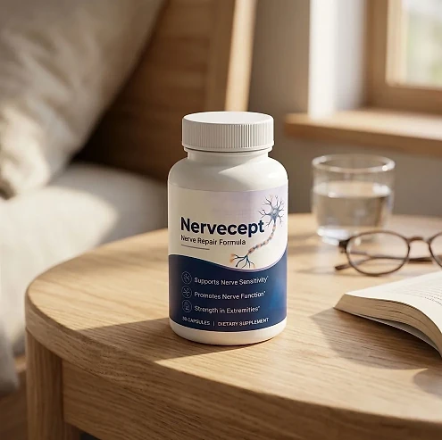
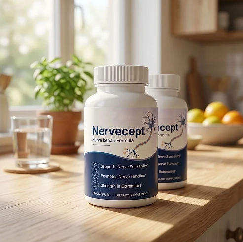
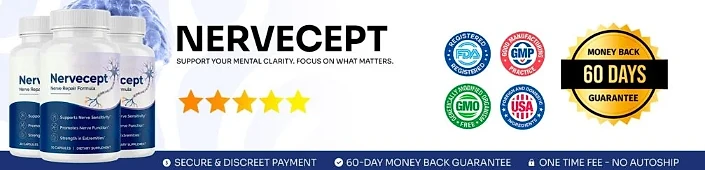

What Is Nervecept And How Does It Work?
Nervecept is a dietary supplement in capsule form designed to support daily nerve comfort, healthy nerve function, and overall neurological well-being for adults who want to address the tingling, stiffness, and discomfort in the hands and feet that can build up with age and busy routines through a natural, dependable approach — without complicated routines or temporary quick fixes.
It utilizes a simple daily capsule that combines Glucosamine Sulfate, Indian Frankincense, Chondroitin Sulfate, Turmeric, Quercetin, Methionine, MSM, and Bromelain to support the body's natural inflammatory balance, tissue health, and comfort in the extremities, helping the body maintain its natural balance throughout the day.
The ingredients in Nervecept are structural compounds, plant extracts, and an amino acid that, according to the official website, provide targeted nutritional support for nerve health and overall comfort, particularly for adults who prefer one simple capsule a day over multiple products or complicated plans.
Rather than acting as a short-lived artificial fix, Nervecept focuses on a whole-formula approach, working gradually alongside daily routines to help maintain greater comfort when moving, better mobility, and long-term wellness.
With consistent daily use, many users report more comfort in their hands and feet, easier movement during the day, and a gradual sense of well-being, especially when combined with a balanced diet, good sleep, and regular exercise.
From a practical standpoint, Nervecept is a daily nerve support capsule designed to support wellness from within — helping you stay active, comfortable, and in control of your health.
Manufactured in the USA with globally sourced ingredients, according to the product label, Nervecept is designed for regular daily use, focusing on safety, purity, and quality for those seeking a natural, non-prescription route to everyday nerve comfort.
Nervecept Ingredients
Every capsule of Nervecept contains eight active ingredients listed on the Supplement Facts panel, led by 500 mg of Glucosamine Sulfate and chosen to support nerve comfort, tissue health, and overall well-being as part of a consistent daily routine:
Glucosamine Sulfate (500 mg): A compound naturally present in the body that provides structural and nutritional support for tissues and comfort in the extremities.
Indian Frankincense (67 mg): A Boswellia serrata extract traditionally used to support a balanced inflammatory response and everyday mobility.
Chondroitin Sulfate (50 mg): A structural component of connective tissue included to support the areas that suffer the most daily wear.
Turmeric (50 mg): A Curcuma longa root extract associated with inflammatory balance and overall comfort.
Quercetin (8 mg): A plant flavonoid with antioxidant properties that helps protect cells against oxidative stress.
Methionine (8 mg): An essential amino acid that contributes to the normal maintenance of tissues.
Methylsulfonylmethane (MSM, 8 mg): A sulfur compound included to complement the formula's support for tissue comfort.
Bromelain (8 mg): A pineapple stem enzyme that rounds out the blend.
Together, these ingredients work synergistically to support comfort, mobility, and a balanced inflammatory response from within. The capsule is vegetable-based, and the label states that the formula contains shellfish (crayfish).
Nervecept is designed for daily use, offering a natural, non-prescription approach to supporting nerve comfort, without complicated routines or aggressive synthetic compounds.
Nervecept Side Effects
Nervecept is generally considered well tolerated and is designed for adults of different ages and lifestyles who are looking for a safe, natural, and balanced approach to nerve comfort, especially those who prefer an easy one-capsule daily routine to support comfort, mobility, and well-being without resorting to risky solutions with severe side effects.
All ingredients used in Nervecept are described on the official website as natural and produced under strict quality standards (GMP), and Nervecept is manufactured in the USA with globally sourced ingredients, reinforcing consistency, safety, and reliability.
With no widespread reports of serious side effects, Nervecept is generally considered a well-tolerated option. Because the label states that the formula contains shellfish (crayfish), anyone with a shellfish allergy should not take it, and people who use blood-thinning medication should speak with their doctor first, since glucosamine, chondroitin, and turmeric are commonly flagged for that group. It is not intended to diagnose, treat, cure, or prevent any disease, and individual results may vary.
According to the label, pregnant or nursing mothers, children under 18, and individuals with a known medical condition should consult a physician before using Nervecept. The same applies to anyone taking prescription medications, ensuring it fits safely within their personal wellness plan.
Nervecept Dosage
The recommended Nervecept dosage is one capsule a day with an 8 oz. glass of water, and it is designed to fit easily into a daily routine, making consistency simple and convenient. Formulated as an easy daily capsule, it requires no powders to mix, no drinks to prepare, and nothing to measure.
The recommended approach, as printed on the label, is to take one Nervecept capsule once a day. For best results, the label suggests taking Nervecept 20 to 30 minutes before a meal, at the same time each day, or as directed by your healthcare professional, which allows its ingredients to work consistently.
For best results, consistency is key. Each bottle contains 30 capsules, a one-month supply, and because nutritional support for nerve comfort builds gradually, many customers make it part of an ongoing wellness routine.
There is no need for complex schedules or multi-step routines. One simple daily capsule is designed to build lasting support gradually alongside a balanced diet, good sleep, and an active lifestyle. The label also advises storing the bottle in a cool, dry place away from heat and light.
As with any dietary supplement, it's important not to exceed the recommended dose and to check the label on your bottle. Nervecept works best when used regularly, combined with proper hydration, balanced nutrition, and healthy daily habits.
Nervecept – Refund Policy
You can order Nervecept with confidence, knowing that every purchase is protected by a 60-day guarantee from the date of purchase. This allows you to try the formula and decide if it delivers the comfort and support you expect.
According to the refund policy on the official website, refund requests can be made after a minimum trial period of 30 days and must be started within 60 days of the purchase date. Only sealed bottles are eligible, shipping and customs fees are not refunded, return shipping is paid by the customer, and a 20% restocking fee is deducted.
How the refund process works: If you decide Nervecept is not right for you, email customer support to request a return authorization code, then follow the return instructions provided. Once the returned items are received and verified, your refund will be issued to the original payment method, and you will receive a confirmation email.
Customer Support Contact Information: contact@customercs.com or +1 (507) 448-8190, as printed on the product label. The team typically replies to emails within 48 business hours.
Refund Processing Time: After your refund is processed, it may take 5 to 10 business days to appear on your statement, depending on your financial institution.
This refund policy is designed to give customers a clear and transparent experience when trying Nervecept.
Nervecept Customer Reviews
-
Michael Thompson — Houston, TXVerified Purchase – 6 Bottles
“If it wasn't for Nervecept, I'd still be struggling with constant nerve pain, unbearable tingling, and sleepless nights. But thank goodness I didn’t have to keep living that way—just two weeks after starting Nervecept, the pain and numbness significantly decreased, my mobility and balance improved, and I finally slept soundly through the night. Experiencing freedom from pain and full comfort again has never been this easy!”
-
Sarah Rodriguez — Chicago, ILVerified Purchase – 6 Bottles
“I was completely discouraged by my worsening nerve pain, constant numbness, and the unbearable tingling in my feet. It got so bad that I avoided social situations and couldn’t even walk or stand comfortably for long periods. But then I discovered Nervecept, and day by day, the pain and tingling became less intense and much more manageable... I can now move freely and comfortably again, and I feel totally confident in social settings, even when standing or walking for hours. It honestly feels like I got my life and mobility back in just 3 weeks!”
-
Carlos Rio — Seattle, WAVerified Purchase – 6 Bottles
“I was about to give up hope on ever finding a solution that actually relieved my nerve pain and restored my mobility—then Nervecept came into my life... Oh, what a relief! My legs and feet feel rejuvenated, I no longer experience painful numbness or constant tingling, and I’m finally free to walk comfortably and confidently again. I can hardly believe how much this has transformed my daily life!”
Nervecept – Where To Buy
Nervecept is sold through its official website, so if you decide to try it, it's important to be careful about where you purchase it. The official website is the only sales channel the manufacturer lists, and it does not point to marketplaces such as Amazon, eBay, or Walmart.
Listings on third-party platforms may look similar but cannot be verified as authentic, raising concerns about safety, quality, and ingredient freshness. Products purchased outside the official source may not be covered by the 60-day guarantee.
For this reason, most customers recommend purchasing Nervecept only through the official website. Buying directly from the official source ensures you receive the authentic original product, manufactured in the USA, with access to customer support and the full guarantee. According to the official website, every purchase is a one-time order, with no automatic renewals, hidden fees, or surprise charges.
To avoid counterfeit batches and ensure maximum quality, always verify that you are ordering from the official Nervecept website before completing your purchase.
To ensure you’re getting the authentic product, most users choose to visit the official website.
Is Nervecept A Scam?
Based on what the official website and the product label disclose, Nervecept does not appear to be a scam. It is a real capsule supplement, sold through an established retailer, and formulated to support nerve comfort, tissue health, and everyday mobility as part of a consistent routine.
The ingredients used in Nervecept — Glucosamine Sulfate, Indian Frankincense, Chondroitin Sulfate, Turmeric, Quercetin, Methionine, MSM, and Bromelain — are well known in the wellness field, and the label publishes a full Supplement Facts panel with the amount of each one for transparency.
In addition to its simple formula, Nervecept is manufactured in the USA with globally sourced ingredients, according to the product label, and under GMP quality standards, according to the official website, focused on safety, purity, and consistency.
Many users report more comfort and easier movement throughout the day and an easy daily habit, making Nervecept a practical option for those seeking natural support for nerve comfort. Results vary from person to person, and no supplement replaces medical care or prescribed treatment.
Nervecept is backed by a 60-day guarantee, and orders are one-time purchases with no automatic renewals, recurring charges, or hidden fees. The refund rules, including the sealed-bottle requirement and the restocking fee, are published on the official website, which underscores the manufacturer's transparency with customers.
If you're looking for a simple daily capsule to support nerve comfort, mobility, and well-being without complicated routines, Nervecept is worth considering — especially when purchased directly from the official website.
For those who want to verify product details or check current availability, the official Nervecept website remains the safest option.

Check Availability On Official Website
